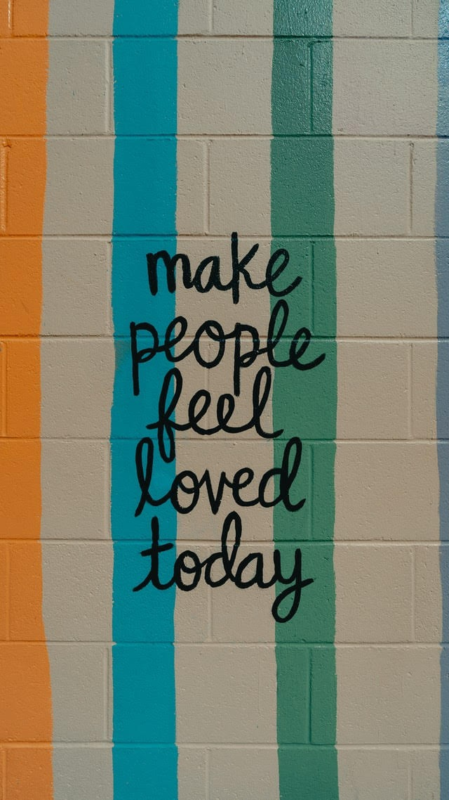

What do you call it
1.When nobody wakes you up in the morning
2.Nobody waits for you at night
3.You can do whatever you want
Young people might call it freedom 💃 but the elderly call it loneliness 😢
They are not invisible to us, we see them, we meet them, we greet them and then we just get on with our busy lives🙏
You might feel that you are giving enough time to your parents & grandparents and doing your best to lessen their loneliness, but for them, it isn’t enough?
We are always talking about ourselves, today let’s talk about ways we can make our elderly feel special (it begins with keeping your phone aside) 📴
1.Enjoy a meal together- take them out or order in their favourite meal
2.Ask them about themselves- what was their life like back then, their dreams, their happiness
3.Encourage them to love themself- our elders have never had time for themselves so they’re still unaware of self-care
4.Join a community- there are many groups for the elderly- library, laughing club, cards
5.Listen to old songs together- play their favourite songs and ask them to sing along
